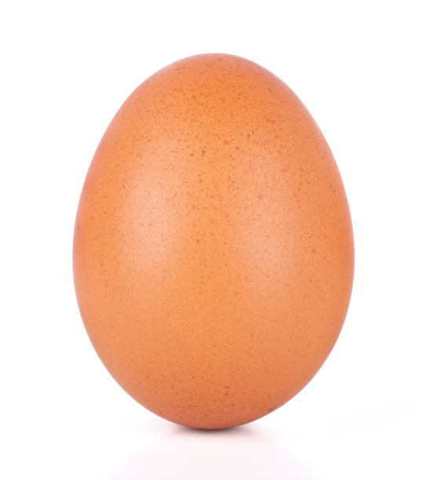
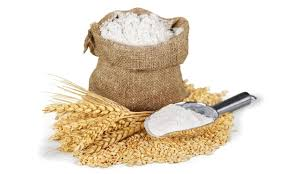
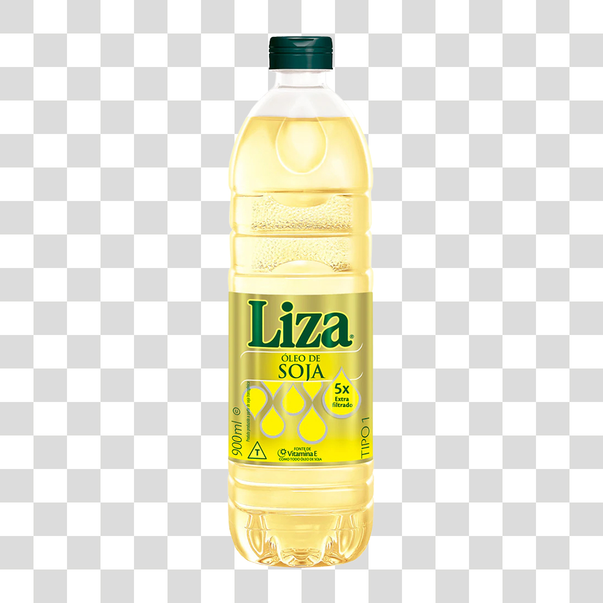
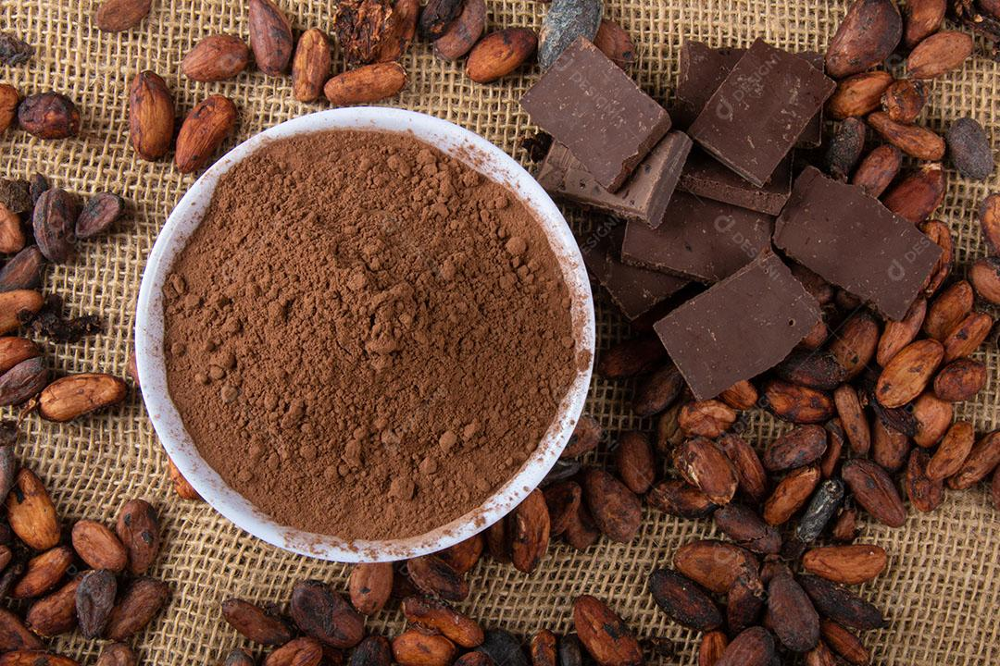
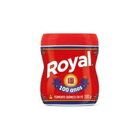
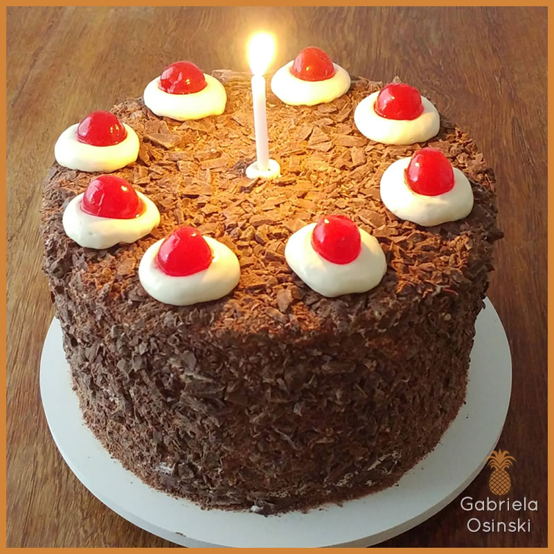

Receita do bolo de chocolate do glaug
Bolo de Chocolate Simples do Glaug
Esse bolo é a prova de que menos é mais. Com ingredientes básicos — ovos fresquinhos, farinha, chocolate em pó, óleo e fermento — ele sai do forno com uma textura leve e macia, quase como um abraço quentinho. O sabor do chocolate em pó se destaca de forma suave, trazendo aquele gostinho caseiro que lembra infância e conforto.
Ele tem uma cor marrom intensa, resultado do chocolate que se espalha por toda a massa, deixando o bolo úmido e saboroso, sem precisar de recheios ou coberturas complicadas. O óleo garante que a massa fique molhadinha, enquanto os ovos dão leveza e estrutura.
Simples, despretensioso e perfeito para acompanhar um café ou um chá, esse bolo é aquele clássico que agrada todo mundo, feito com carinho e ingredientes que todo mundo tem em casa..
| Imagem |
Ingrediente |
Quantidade |
 |
Ovos |
3 unidades |
 |
Farinha de trigo |
2 xícaras (chá) |
 |
Óleo |
meia xícara (chá) |
 |
Açúcar |
1 xícara e meia (chá) |
 |
Chocolate em pó |
1 xícara (chá) |
 |
Fermento em pó |
1 colher de sopa |
Utensílios utilizados:
Modo de preparo:
- Pré-aqueça o forno a 180ºC.
- No liquidificador, bata os ovos, o óleo e o açúcar até obter uma mistura homogênea.
- Adicione o chocolate em pó e bata novamente.
- Em uma tigela, peneire a farinha de trigo com o fermento.
- Incorpore aos poucos os ingredientes secos à mistura do liquidificador, mexendo delicadamente para não formar grumos.
- Despeje a massa na forma untada.
- Leve ao forno por aproximadamente 35 a 40 minutos ou até que um palito saia limpo ao ser inserido no bolo.
- Retire do forno, espere esfriar e desenforme.
- Sirva e aproveite!
